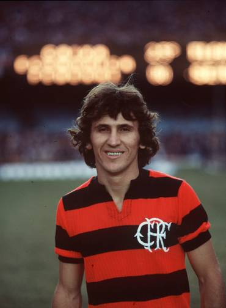
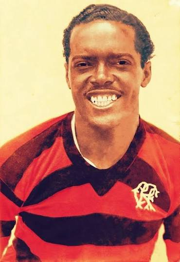
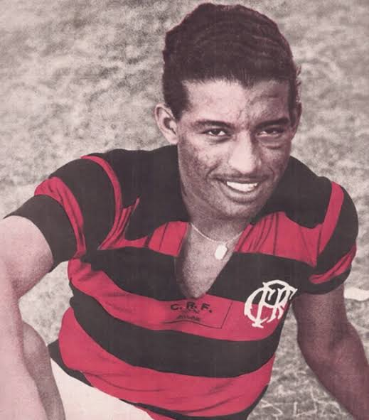
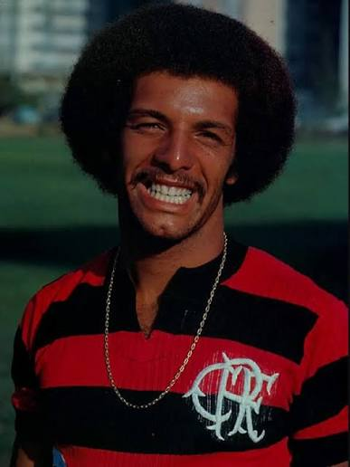
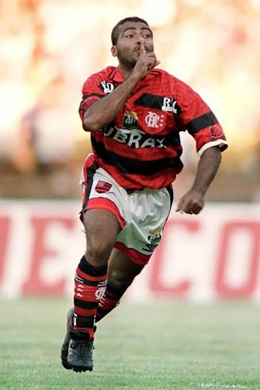
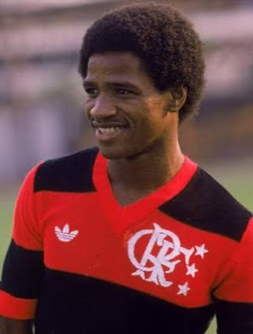
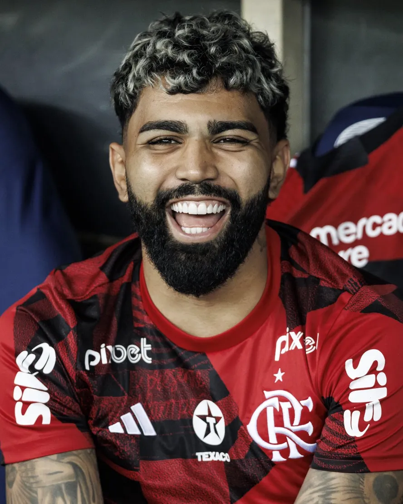

Ao longo de mais de um século de futebol, o Flamengo formou e revelou alguns dos maiores jogadores da história do esporte brasileiro. Conheça abaixo alguns dos maiores ídolos do clube.
Arthur Antunes Coimbra, o Zico, é considerado por muitos torcedores o maior jogador da história do Flamengo. Revelado nas categorias de base do clube, atuou como meia-atacante entre 1971 e 1989 (com uma breve passagem pelo futebol italiano no meio do caminho) e é o maior artilheiro da história rubro-negra, com mais de 500 gols marcados. Foi peça central na conquista da Libertadores e do Mundial de Clubes de 1981, além de três Campeonatos Brasileiros. Depois de encerrar a carreira, também se tornou treinador e dirigente esportivo.

Um dos maiores centroavantes da história do futebol mundial, Leônidas da Silva vestiu a camisa do Flamengo nos anos 1930 e 1940. Foi artilheiro e eleito o melhor jogador da Copa do Mundo de 1938, disputada na França, e é apontado por muitos historiadores como um dos precursores da bicicleta como fundamento de jogo.

Thomaz Soares da Silva, o Zizinho, foi um dos principais meias do futebol brasileiro nas décadas de 1940 e 1950, com passagem de destaque pelo Flamengo. Reconhecido por sua técnica refinada, é lembrado como um dos ídolos que ajudaram a consolidar a tradição vitoriosa do clube antes da chegada ao Maracanã.

Lateral-esquerdo e um dos capitães da geração campeã de 1981, Júnior formou ao lado de Zico um dos meios de campo mais lembrados da história do clube. Depois de se destacar no Flamengo, também defendeu a Seleção Brasileira em Copas do Mundo.

Um dos maiores artilheiros da história do futebol mundial, Romário teve passagens pelo Flamengo, principalmente nos anos 1990 e no início dos anos 2000, período em que formou ao lado de outros atacantes o time apelidado de "ataque dos sonhos". Reforçou, já em fase mais avançada da carreira, a tradição goleadora do clube.

Adílio, Nunes, Cláudio Adão, Raul Plassmann e outros jogadores formaram, ao lado de Zico e Júnior, o elenco que conquistou a primeira Libertadores e o título Mundial de 1981 sobre o Liverpool. Essa geração é lembrada como uma das melhores da história do clube.

Gabriel Barbosa, o Gabigol, se tornou um dos maiores ídolos recentes do clube ao marcar os dois gols da virada sobre o River Plate na final da Libertadores de 2019, um dos momentos mais lembrados do Flamengo no século XXI. Desde então, segue entre os principais artilheiros do futebol brasileiro vestindo a camisa rubro-negra.
